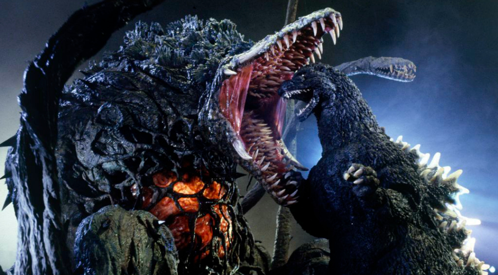

Foi visto pela primeira vez em 1954 no filme "Gojira", produzido pela Toho Film Company Ltd. É conhecido por sua aparência semelhante a um dinossauro, coberto com placas peculiares nas costas, capaz de disparar uma forma de fogo ou raio atômico pela boca e também por ser quase indestrutível. Até o momento, a Toho produziu 32 filmes sobre Godzilla, sendo os mais recentes "Shin Godzilla" de 2016, e o seus filmes animados, o anime "Godzilla: Planet of the Monsters". Em quase todos os filmes era interpretado por um ator fantasiado (suitmation), mas nos mais recentes passou a ser retratado por CGI. Quatro de seus filmes japoneses receberam versões americanas bastante modificadas em relação às originais, contendo cenas inéditas gravados pelos americanos além de outras alterações. Em 1998, a TriStar Pictures produziu uma o americana situada na cidade de Nova Iorque, com o monstro redesenhado, porém esta versão não agradou a própria Toho que mais tarde a apelidou de Zilla. Em 2014, numa co-produção da Legendary Pictures e da Warner Bros. Pictures, ganhou uma nova versão americana, distribuída pela Warner Bros. Pictures em todo o mundo menos no Japão, onde foi distribuída pela própria Toho. Esta versão se provou um sucesso e garantiu duas sequências: "Godzilla: King of the Monsters" para 2019 e "Godzilla vs. Kong" para 2020. No decorrer dos anos, Godzilla também inspirou muitos outros tokusatsus que fazem sucesso no Japão e no mundo.

Criação
Godzilla é uma criação do produtor Tomoyuki Tanaka, do diretor Ishirō Honda, do mago dos efeitos Eiji Tsuburaya — que mais tarde viria a ser o pai da família Ultra — e do compositor Akira Ifukube.
Godzilla é a personificação do medo das armas nucleares. Criado por uma explosão nuclear, seu imenso tamanho, força, terror e destruição evocam a fúria das bombas atômicas lançadas em Hiroshima e Nagasaki. No decorrer da série o grande monstro se desenvolveu como um personagem com características ora de um vilão, ora de um herói, frequentemente salvando Tóquio, e posteriormente outras cidades, de invasões de outros daikaijū e de alienígenas, embora no processo ele destrua grande parte dessas cidades.
Para muitas pessoas em todo o mundo, Godzilla é um aspecto característico da cultura popular japonesa. Ele ainda é um dos monstros mais reconhecidos no mundo, apesar da sua popularidade ter enfraquecido ao longo dos anos. Godzilla remanesce como uma importante faceta dos filmes japoneses, incorporando o "kaijū", ou monstro gigante, no gênero tokusatsu, ou filme de efeitos especiais — gênero que provavelmente inaugurou com seus primeiros longa-metragens.
Evolução
Todos os filmes do Godzilla até 2004, com exceção da versão americana de 1998 feita em CGI, foram gravados usando a tradicional técnica suitmation (atores usando roupas de monstros). As roupas são feitos de látex retardante de incêndio, o que evita queimaduras em seus usuários. Os dentes são feitos de madeira e resina. O ator pode ver através de buraquinhos no pescoço da roupa; na ficção, esses buraquinhos foram explicados como guelras pelas quais Godzilla respira embaixo d'água. Cabos e baterias são instalados nas roupas para a movimentação do rosto e fios de náilon são usados por manipuladores assistentes para mover o rabo. Outras técnicas também já foram utilizadas para representar os monstros, como bonecos de stop-motion, marionetes, animatrônicos e por fim CGI com captura de movimento, a mais comum nos filmes recentes.
produções recentes
Godzilla II: Rei dos Monstros foi lançado nos cinemas em 31 de maio de 2019, para críticas mistas, com elogios aos efeitos visuais, sequências de ação, cinematografia e partitura musical, mas críticas direcionadas ao ritmo, tom, história e personagens. O filme foi uma decepção nas bilheterias, arrecadando 385 milhões de dólares em todo o mundo, contra um orçamento de produção entre 170 e 200 milhões de dólares. Uma sequência, Godzilla vs. Kong , está programada para ser lançada em 20 de novembro de 2020.
Durante os créditos é mostrado a Ilha Da Caveira onde é o lar de Kong que foi apresentado em seu filme solo em 2017 e também é mostrado recortes de jornais onde falam "O que Deus tem contra o Rei" o monstro sendo chamado de "Deus" é Kong no seu filme de 2017 é mencionado que Kong é o Deus desses monstros e que ninguém tem coragem de desafia-lo já o Rei é o Godzilla que acabou de ganhar esse título após derrotar King Ghidorah,além de pinturas antigas mostrarem um confronto de Kong e Godzilla já dando a entender que o o confronto dessas criaturas está mais perto.
E na cena pós créditos é mostrado um grupo de mafiosos comprando a cabeça do King Ghidorah que foi arrancada pelo Godzilla
primeira pagina
Godzilla vs. Kong é um futuro filme de monstros estadunidense dirigido por Adam Wingard e escrito por Terry Rossio. É uma continuação de Godzilla II: Rei dos Monstros (2019) e Kong: Skull Island (2017) e também que era um remake de King Kong vs. Godzilla de 1962, e será o quarto filme do MonsterVerse da Legendary Entertainment. O filme também será o 36º filme da franquia Godzilla, o nono filme da franquia King Kong e o quarto filme Godzilla a ser completamente produzido por um estúdio de Hollywood.[nota 1] O filme é estrelado por Alexander Skarsgård, Millie Bobby Brown, Rebecca Hall, Brian Tyree Henry, Shun Oguri, Eiza González, Jessica Henwick, Julian Dennison, Kyle Chandler e Demián Bichir.
O projeto foi anunciado em outubro de 2015, quando a Legendary anunciou planos para um universo cinematográfico compartilhado entre Godzilla e King Kong. A sala de roteiristas do filme foi montada em março de 2017 e Wingard foi anunciado como diretor em maio de 2017. As filmagens começaram em novembro de 2018 no Havaí, na Austrália e em Hong Kong e foi encerrada em abril de 2019. Godzilla vs. Kong está programado para ser lançado 20 de novembro de 2020 nos Estados Unidos, em 2D, 3D e IMAX.[3]